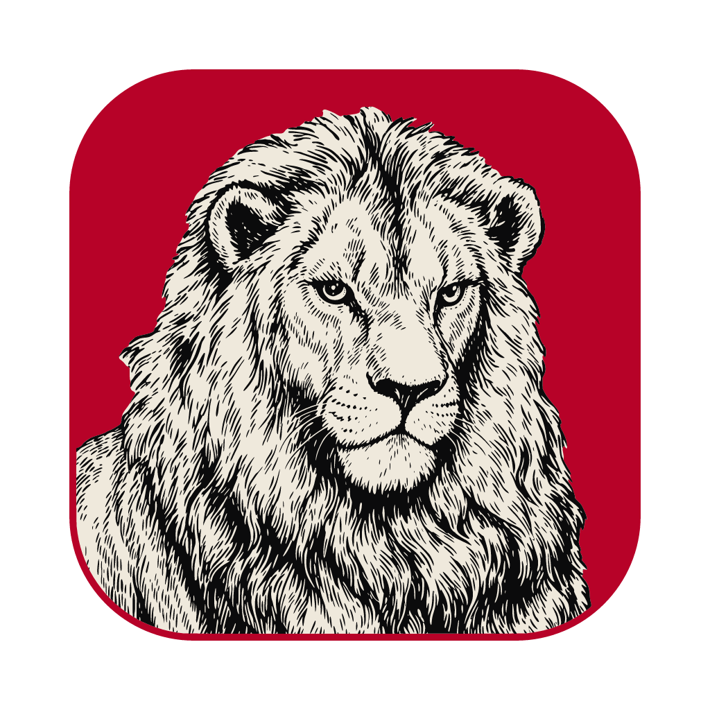
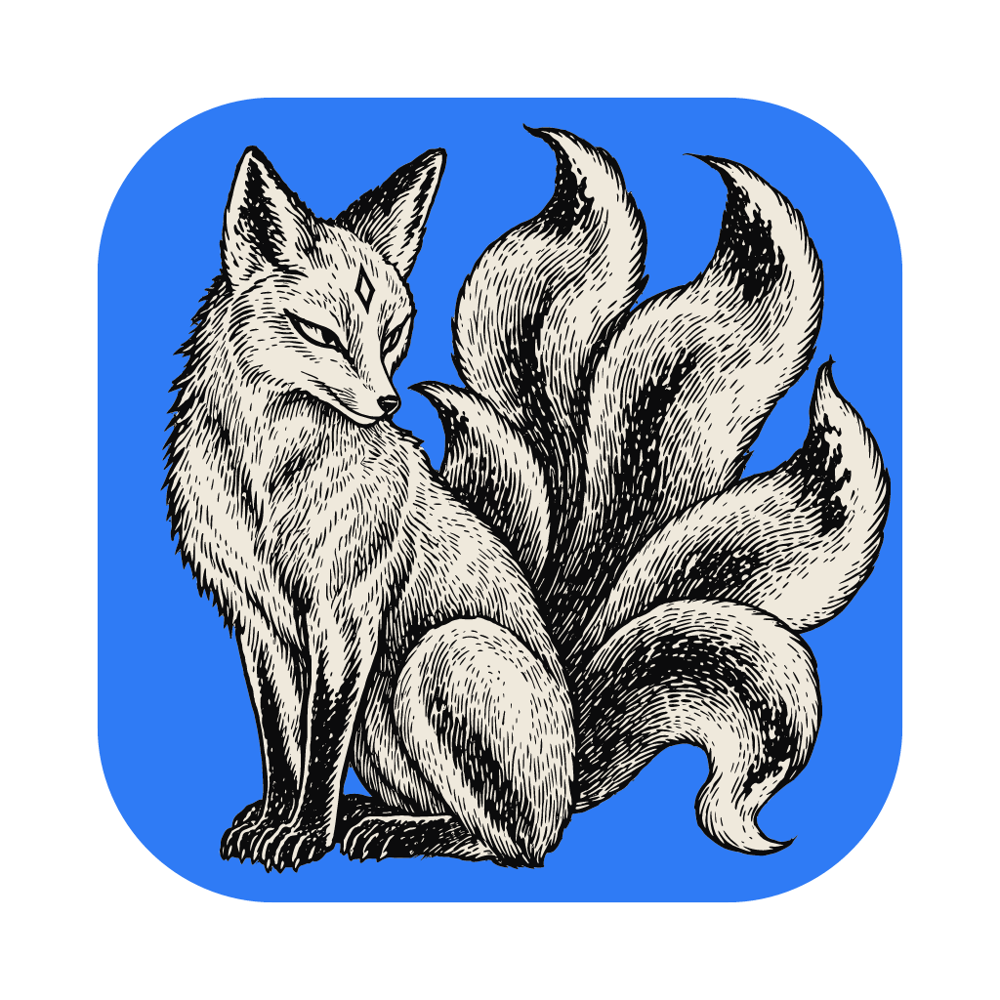
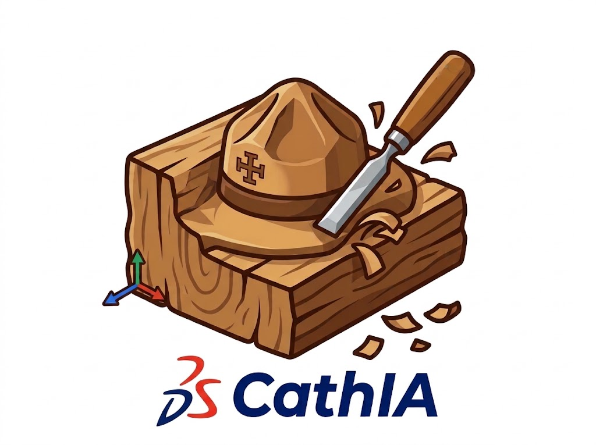

G
ScoutOffice
Code source ↗
Applications
Ouvrez une application directement dans votre navigateur.
Bureautique
Word
Documents et traitement de texte
Ouvrir ↗
Excel
Tableurs et feuilles de calcul
Ouvrir ↗
PowerPoint
Présentations et diaporamas
Ouvrir ↗

PDF
Lecture et édition de PDF
Ouvrir ↗
Création

Photoshop
Retouche et création d’images
Ouvrir ↗
Premiere
Montage vidéo non linéaire
Ouvrir ↗
Illustrator
Illustration et création vectorielle
Ouvrir ↗
Draw
Dessin libre et tableaux blancs
Ouvrir ↗
Notes et organisation
Notes
Carnet personnel et wiki local
Ouvrir ↗
Cartographie et terrain
Cartes IGN
Cartes de France, outils de mesure et échelle 1:25 000
Ouvrir ↗
Calcul Itinéraire
Calcul et préparation d’itinéraires
Ouvrir ↗
Conception et CAO
ScoutDraft
Dessin technique 2D et 3D
Ouvrir ↗
ScoutCAD
Modélisation paramétrique
Ouvrir ↗

CathIA
Assistant de conception
Ouvrir ↗